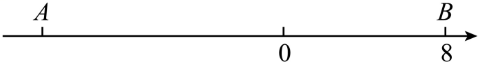
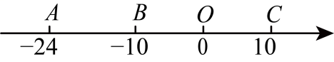
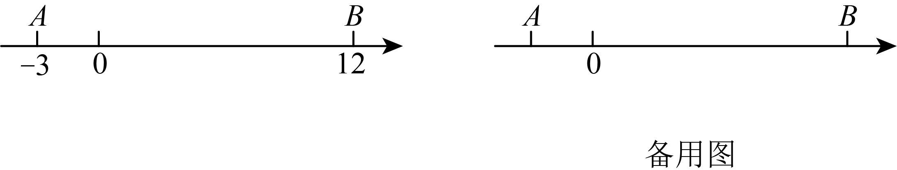
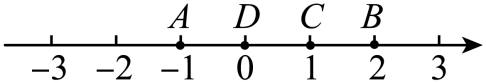
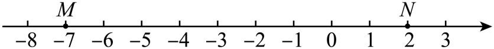
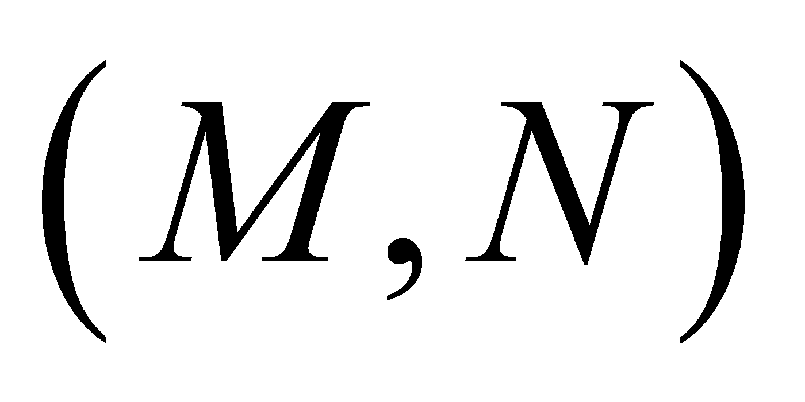
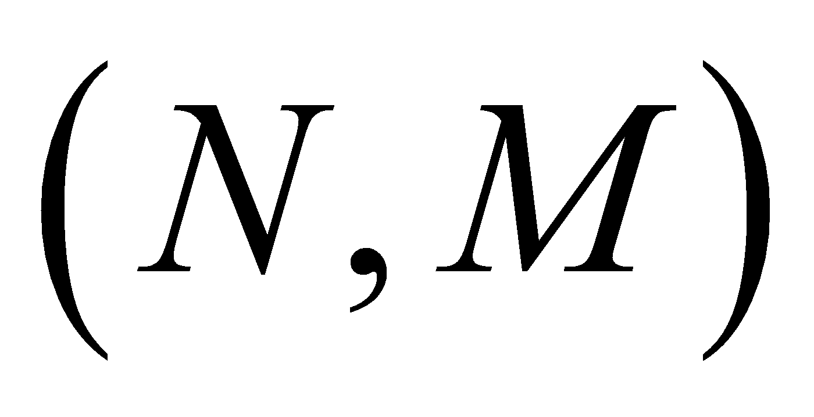
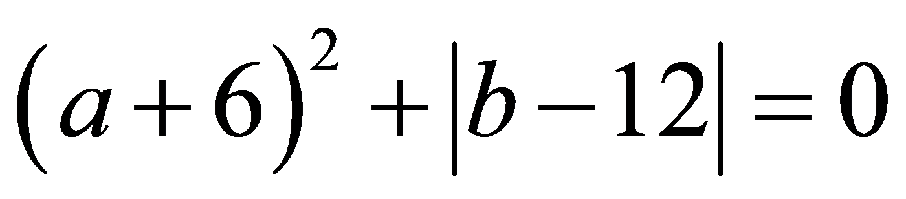
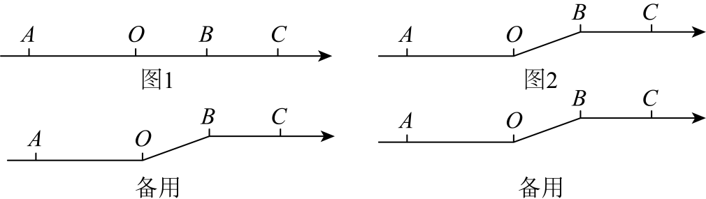
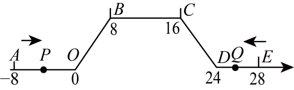

第05讲 难点探究专题：数轴上的行程问题(5类热点题型讲练)
第05讲 难点探究专题：数轴上的行程问题(5类热点题型讲练)
目录
【考点一 数轴上的行程问题之相遇问题】 1
【考点二 数轴上的行程问题之相距问题】 4
【考点三 数轴上的行程问题之三点中点问题】 8
【考点四 数轴上的行程问题之新定义型问题】 13
【考点五 数轴上的行程问题之折线数轴问题】 17
【考点一 数轴上的行程问题之相遇问题】
例题：（24-25七年级上·江苏·阶段练习）如图，已知数轴上点A表示的数为4，点B是数轴上在点A左侧的一点，且A、B两点间的距离为8，动点P从点A出发，以每秒2个单位长度的速度沿数轴向左匀速运动．

（1）数轴上点B表示的数是 ；
（2）运动1秒时，点P表示的数是 ；
（3）动点Q从点B出发，以每秒1个单位长度的速度沿数轴向左匀速运动，若点P、Q同时出发，当点P运动 秒时，点P与点Q相遇．
【变式训练】
1．（23-24七年级上·浙江温州·期中）如图，点A和B在数轴上分别表示数 ，
， ，点0为原点．甲、乙两人分别从点A，B同时出发，在线段
，点0为原点．甲、乙两人分别从点A，B同时出发，在线段 间往返运动，甲的速度为每秒3个单位长度，乙的速度为每秒2个单位长度．
间往返运动，甲的速度为每秒3个单位长度，乙的速度为每秒2个单位长度．

(1)求点A，B之间的距离．
(2)①经过______秒，甲、乙两人第一次相遇．
②经过______秒，甲、乙两人第二次相遇，此时相遇点在数轴上表示的数为______．
2．（23-24七年级上·湖北黄石·期末）已知数轴上有 、
、 两点，分别表示的数为
两点，分别表示的数为 和
和 ，点以每秒
，点以每秒 个单位的速度沿数轴向右匀速运动，点以每秒
个单位的速度沿数轴向右匀速运动，点以每秒 个单位向左匀速运动．设运动时间为
个单位向左匀速运动．设运动时间为 秒
秒 ．
．
(1)运动开始前，、两点的距离为 ；线段的中点 所表示的数为 ．
所表示的数为 ．
(2)它们按上述方式运动，、两点经过多少秒会相遇，相遇点所表示的数是什么？
(3)当为多少时，线段的中点表示的数为 ？并直接写出在这一运动过程中点的运动方向和运动速度．
？并直接写出在这一运动过程中点的运动方向和运动速度．
【考点二 数轴上的行程问题之相距问题】
例题：（24-25七年级上·浙江杭州·阶段练习）已知，、分别在数轴上的两点，点对应的数为 ，点对应的数为20．
，点对应的数为20．
(1)请写出 __________；
__________；
(2)现在有一只电子蚂蚁 从点出发，以3个单位/秒的速度向右运动，同时另一只电子蚂蚁
从点出发，以3个单位/秒的速度向右运动，同时另一只电子蚂蚁 恰好从点出发，以2个单位/秒的速度向左运动，设两只电子蚂蚁在数轴上的
恰好从点出发，以2个单位/秒的速度向左运动，设两只电子蚂蚁在数轴上的 点相遇，请你求出点对应的数；
点相遇，请你求出点对应的数；
(3)若当电子蚂蚁从点出发，以3个单位/秒的速度在数轴上匀速运动，同时另一只电子蚂蚊恰好从点出发，以2单位/秒的速度在数轴上匀速运动，经过多长时间两只电子蚂蚁在数轴上相距35个单位长度．
【变式训练】
1．（24-25七年级上·吉林长春·阶段练习）如图，已知数轴上点A表示的数为3，B是数轴上在点A左侧的一点，且A，B两点间的距离为6，动点P从点A出发，以每秒6个单位长度的速度沿数轴向左匀速运动．

(1)数轴上点B表示的数是_________．
(2)动点Q从点B出发，以每秒2个单位长度的速度沿数轴向左匀速运动，若点P、Q同时出发．求：
①当点P运动多少秒时，点P与点Q相遇？
②当点P运动多少秒时，点P与点Q间的距离为5个单位长度？
2．（23-24六年级上·山东烟台·期末）如图，数轴上点、之间的距离为20个单位长度，点表示的有理数是8．动点从点出发，以每秒2个单位长度的速度沿数轴向右匀速运动．与此同时，动点从点出发，以每秒3个单位长度的速度沿数轴向左匀速运动，动点以每秒5个单位长度的速度在、之间往返运动．设运动时间为 秒．
秒．

(1)点表示的数是___________，点表示的数是__________；（用含的代数式表示）
(2)求经过多长时间，、两点相遇？此时点一动运动了多少个单位长度？
(3)求经过多长时间，点到原点的距离是点到原点距离的2倍？
【考点三 数轴上的行程问题之三点中点问题】
例题：（23-24七年级上·浙江杭州·期末）如图（1），已知A，B为数轴上的两点，点O表示原点，点A表示的数为 ．动点C从A出发做匀速运动，动点D从B出发做匀速运动．
．动点C从A出发做匀速运动，动点D从B出发做匀速运动．

(1)若动点C向右运动，动点D向左运动，且两点同时出发，它们运动的时间、在数轴上的位置所表示的数记录如下表．请将表格补充完整．
时间（秒） | 0 | 1 | 2 |
C点在数轴上的位置所表示的数 |
|
| _____ |
D点在数轴上的位置所表示的数 | _____ | 3 | 2 |
(2)若点D先出发2秒后，点C开始运动，它们以（1）中各自的速度和方向运动，求两点相遇时的位置所表示的数．
(3)如图（2），若动点C，D以（1）中各自的速度同时反方向运动，同一时刻数轴上另有一动点P以恒定速度和方向从点O出发运动．在运动过程中，如果点F为线段 的中点，且
的中点，且 ，试求点P的运动方向和速度．
，试求点P的运动方向和速度．
【变式训练】
1．（24-25七年级上·江苏南京·阶段练习）已知数轴上有A，B，C三点，分别表示数 ，，10．甲、乙两人分别从A，C两点同时相向而行，甲的速度为4个单位/秒，乙的速度为6个单位/秒
，，10．甲、乙两人分别从A，C两点同时相向而行，甲的速度为4个单位/秒，乙的速度为6个单位/秒

(1)问甲、乙在数轴上表示有理数________的点相遇；
(2)________秒后甲到A，B，C三点的距离之和为40个单位．
(3)若甲、乙两人（用P表示甲、Q表示乙）分别从A，C两点同时相向而行，甲的速度变为原来的3倍，乙的速度不变，直接写出多少时间后，原点O、P与Q三点中，有一点恰好是另两点所连线段的中点．
2．（23-24七年级下·重庆南岸·开学考试）数轴体现了数形结合的数学思想，请解决下面与数轴相关的问题．

(1)如图，数轴上点A表示的数为 ，点B表示的数为12，则A，B两点之间的距离 ，线段的中点表示的数为 ．找出所有符合条件的整数x，使得
，点B表示的数为12，则A，B两点之间的距离 ，线段的中点表示的数为 ．找出所有符合条件的整数x，使得 成立，这样的整数是 ；
成立，这样的整数是 ；
(2)在点A表示的数为，点B表示的数为12的条件下，若点P从点A出发，以每秒3个单位长度的速度沿数轴向右运动，同时点Q从点B出发，以每秒2个单位长度的速度向左运动．设运动时间为t秒（ ）．求当t为何值时，P，Q两点相遇，并写出相遇点所表示的数；
）．求当t为何值时，P，Q两点相遇，并写出相遇点所表示的数；
(3)若点A表示的数 ，点B与点A的距离是10，且点B在点A的右侧，动点P、Q同时从A、B出发沿数轴正方向运动，点P的速度是每秒3个单位长度，点Q的速度是每秒
，点B与点A的距离是10，且点B在点A的右侧，动点P、Q同时从A、B出发沿数轴正方向运动，点P的速度是每秒3个单位长度，点Q的速度是每秒 个单位长度，求运动几秒后，B、P、Q三点中，有一点恰好是另两点所连线段的中点？（请写出必要的求解过程）．
个单位长度，求运动几秒后，B、P、Q三点中，有一点恰好是另两点所连线段的中点？（请写出必要的求解过程）．
【考点四 数轴上的行程问题之新定义型问题】
例题：（23-24七年级上·浙江宁波·期中）【新知理解】如图①，点C在线段上，图中的三条线段、 和
和 ．若其中一条线段的长度是另外一条线段长度的2倍，则称点C是线段的“蓝青点”．
．若其中一条线段的长度是另外一条线段长度的2倍，则称点C是线段的“蓝青点”．
（1）填空：线段的中点_________这条线段的“蓝青点”；（填“是”或“不是”）
【问题解决】（2）如图②，点A和B在数轴上表示的数分别是和40，点C是线段的“蓝青点”，求点C在数轴上表示的数．
【应用拓展】（3）在（2）的条件下，动点P从点A出发，以每秒2个单位长度的速度沿向点B匀速运动；动点Q从点B出发，以每秒3个单位长度的速度沿 向点A匀速运动．点P、Q同时出发，当其中一点到达终点时，两个点运动同时停止，设运动的时间为t秒，当t为何值时，A、P、Q三点中，其中一点恰好是另外两点为端点的线段的“蓝青点”？（直接写出答案）．
向点A匀速运动．点P、Q同时出发，当其中一点到达终点时，两个点运动同时停止，设运动的时间为t秒，当t为何值时，A、P、Q三点中，其中一点恰好是另外两点为端点的线段的“蓝青点”？（直接写出答案）．

【变式训练】
1．（23-24七年级上·广东惠州·阶段练习）定义：A，B，C为数轴上三点，当点C在线段上时，若点C到点A的距离是点C到点B的距离2倍，我们称点C是 的美好点．例如：如图①，点A表示数，点B表示数2，点C表示数1，点D表示数0．点C到点A的距离是2，到点B的距离是1，那么点C是的美好点；又如，点D到点A的距离是1，到点B的距离是2，那么点D就不是的美好点，但点D是
的美好点．例如：如图①，点A表示数，点B表示数2，点C表示数1，点D表示数0．点C到点A的距离是2，到点B的距离是1，那么点C是的美好点；又如，点D到点A的距离是1，到点B的距离是2，那么点D就不是的美好点，但点D是 的美好点．
的美好点．

如图②，M，N为数轴上两点，点M表示数 ，点N表示数2．
，点N表示数2．

(1)①求

的美好点表示的数为______．②求

的美好点表示的数为______．(2)数轴上有一个动点P从点M出发，沿数轴以每秒2个单位长度的速度向右运动，设点P运动的时间为t秒，当点P为 的美好点时，求t的值．
的美好点时，求t的值．
2．（23-24七年级上·湖北武汉·期中）已知，两点在数轴上对应的有理数分别为 ，
， ，且，满足：
，且，满足：

．
(1)则 ________；
________； ________；
________；
(2)定义：若点为数轴上，两点之间一点，且到，两点的距离满足：其中一个距离是另一个距离的2倍，则称为，两点的“友好点”．
①求，两点的“友好点”在数轴上对应的有理数；
②点以每秒4个单位长度的速度从点出发，沿数轴向右运动，同时点以每秒1个单位长度的速度从点出发，沿数轴向右运动，当点、相遇则停止运动．设运动时间为秒，若整个运动过程中，，，三点中有一点是另两点的“友好点”，求值．
【考点五 数轴上的行程问题之折线数轴问题】
例题：（24-25七年级上·四川成都·阶段练习）如图，将一条数轴在原点O和点B处各折一下，得到一条“折线数轴”，图中，点A表示的数为 ，点B表示的数为10，点C表示为18，我们称点A和点C在该数轴上的“折线距离”为24个长度单位，动点P从点A出发，以1单位/秒的速度沿着“折线数轴”的正方向运动，从点O运动到点B期间速度变为原来的两倍，之后立刻恢复原速；同时，动点Q从点C出发，以2单位/秒的速度沿着折线数轴的负方向运动，从点B运动到点O期间速度变为原来的一半，之后也立刻恢复原速，设运动的时间为t秒，则：
，点B表示的数为10，点C表示为18，我们称点A和点C在该数轴上的“折线距离”为24个长度单位，动点P从点A出发，以1单位/秒的速度沿着“折线数轴”的正方向运动，从点O运动到点B期间速度变为原来的两倍，之后立刻恢复原速；同时，动点Q从点C出发，以2单位/秒的速度沿着折线数轴的负方向运动，从点B运动到点O期间速度变为原来的一半，之后也立刻恢复原速，设运动的时间为t秒，则：

(1)动点P从点A运动至点C需要______秒，动点Q从点C运动至点A需要_______秒；
(2)若P，Q两点在点M处相遇，求相遇时间t以及点M在折线数轴上所表示的数；
(3)是否存在t值，使得P、O两点在数轴上的“折线距离”与Q、B两点在数轴上的的“折线距离”相等．
【变式训练】
1．（23-24六年级下·黑龙江哈尔滨·阶段练习）已知，如图，数轴上依次有、、三点，它们在数轴上对应的数分别是、、 ，其中、满足
，其中、满足 ，点到点的距离为20．
，点到点的距离为20．

(1)求、、的值．
(2)如图1，动点从点出发，以每秒2个单位长度的速度沿着数轴的正方向运动，动点从点出发，以每秒1单位长度的速度沿着数轴的负方向运动，、两点同时出发，在点处相遇，求出相遇点所对应的数是多少；
(3)如图2，将数轴在原点 和点处各折一下，得到一条“折线数轴”，（图中、两点在“折线数轴”上的距离为28个单位长度）．动点从点出发，以每秒2个单位长度的速度沿“折线数轴”的正方向运动，从点运动到点期间速度变为原来的一半，之后立刻恢复；同时，动点从点出发以每秒1个单位长度沿着“折线数轴”的负方向运动，从点运动到点期间速度变为原来的2倍，之后立刻恢复，设运动时间为秒，请直接写出当为何值时，、两点在“折线数轴”上的距离与、两点在“折线数轴”的距离相等．
和点处各折一下，得到一条“折线数轴”，（图中、两点在“折线数轴”上的距离为28个单位长度）．动点从点出发，以每秒2个单位长度的速度沿“折线数轴”的正方向运动，从点运动到点期间速度变为原来的一半，之后立刻恢复；同时，动点从点出发以每秒1个单位长度沿着“折线数轴”的负方向运动，从点运动到点期间速度变为原来的2倍，之后立刻恢复，设运动时间为秒，请直接写出当为何值时，、两点在“折线数轴”上的距离与、两点在“折线数轴”的距离相等．
2．（23-24七年级上·重庆渝北·阶段练习）如图将一条数轴在原点O，点B，点C，点D出各折一下，得到“折线数轴”．图中点A表示，点B表示8，点C表示16，点D表示24，点E表示28．我们称点A和点E相距36个单位长度，动点P从A从出发，以每秒4个单位的速度沿着“折线数轴”的正方向移动，同时，动点Q从E出发以每秒3个单位的速度沿着“折线数轴”的负方向移动，两个点上坡时候的速度均是各自初始速度的一半，下坡时候的速度均是各自初始速度的2倍，平地则保持初始速度不变．当点P运动到点E时P点P停止运动，当点Q运动到点A时点Q停止运动，设：运动时间为t．问：

(1)动点P从点A运动到E点需要 秒，此时点Q对应的数是 ；
(2)P，Q两点在点M出相遇，求出相遇点M所对应的数是多少？
(3)求当t为何值时，P，B两点在这个上数轴上相距的长度与Q，D两点在这个数轴上相距长度相等．